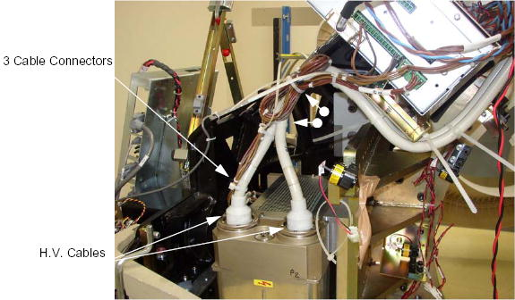

Ground the ends of the H.V. cable to the Gantry frame, to endure no voltage exists at the end of the cable.
Use rags or paper towels to wipe excess oil from the H.V. Cable Connector and tank well.
Stuff the tank wells with paper towels to absorb any oil.
Illustration 2: HV Cable Configuration
